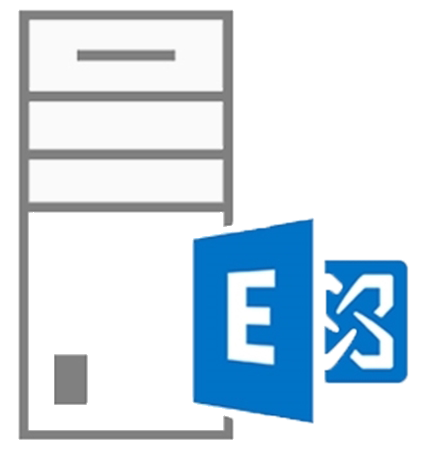
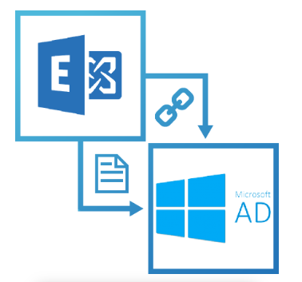
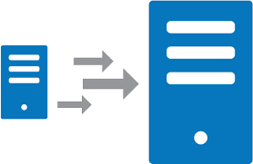

Analyse des besoins
Comprendre les besoins spécifiques de votre organisation en matière de messagerie et de collaboration afin de concevoir une solution adaptée.
|

Installation et configuration d'Exchange Server
Je peux déployer et configurer Microsoft Exchange Server, en tenant compte des exigences matérielles et logicielles de votre infrastructure
|

Mise en réseau
Je peux configurer le réseau pour permettre la communication avec le serveur Exchange, en mettant en place les DNS, les enregistrements MX, et en s'assurant que les pare-feux et les règles de sécurité appropriées sont en place.
|
Gestion des utilisateurs et de messagerie électronique
Je peux vous aider à créer et configurer des comptes d'utilisateurs dans Exchange, en leur attribuant les permissions et les rôles appropriés.
Je vais configurer les paramètres de messagerie, y compris les boîtes aux lettres, les listes de distribution, les règles de messagerie et les signatures électroniques.
|
Sécurité
Je vous aiderais à Mettre en œuvre des mesures de sécurité pour protéger les communications et les données, telles que le chiffrement etla protection contre les logiciels malveillants.
|
Haute disponibilité et tolérance aux pannes
Configurer des fonctionnalités telles que la mise en cluster et la réplication pour assurer une haute disponibilité de la messagerie.
|

Intégration avec d'autres services
Je peux vous assurer l'intégration d'Exchange avec d'autres services, tels que Active Directory, SharePoint et Skype for Business.
|

Migration de données
Je peux vous aider à migrer d'une plateforme de messagerie existante vers Exchange ou vers une une version plus récente d'exchange server et s'assurer du transfért des données en douceur.
|